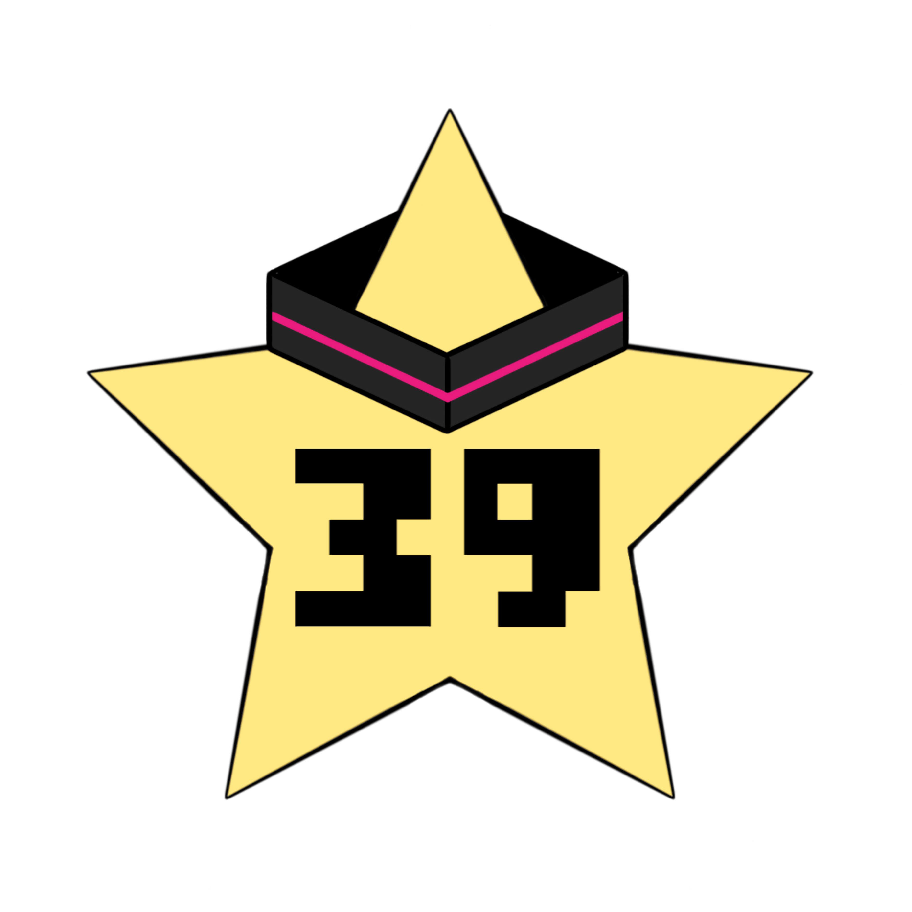

Miku Network
停止中
送信元:
端末 A
端末 B
端末 C
端末 D
送信先:
端末 A
端末 B
端末 C
端末 D
曲選択:
送信開始
停止
最初から
全画面
ネットワークトポロジー
アクティブな歌詞:
0
歌詞ログ
ルーティング
ルーティングテーブル
各ルータが歌詞を転送する際の経路決定基準
宛先
転送先
歌詞ログ
歌詞ログ
ルーティング
ルーティングテーブル
宛先
転送先
歌詞ログ
Miku Networkの使い方
基本操作
このシミュレーションでは、選択した曲の歌詞が送信元から送信先へ流れていくのをリアルタイムで観察できます。
操作手順
「送信元」と「送信先」をドロップダウンから選択します。
「曲選択」で再生したい曲を選びます。
「送信開始」ボタンをクリックして、曲の再生とシミュレーションを開始します。
「停止」ボタンで、再生とシミュレーションを一時停止できます。
「最初から」ボタンで、曲を最初から再生できます。
表示の説明
星マークは各接続のポート番号を表します。
ピンク色で強調された経路は、現在歌詞が通過中の経路です。
ルーティングテーブルは、各ルータが歌詞をどこへ転送するかの判断基準を示しています。
再生中は歌詞の単語がネットワーク上を流れていきます。
キーボードショートカット
S
再生開始/停止
R
最初から再生
F
全画面表示の切り替え
H
このヘルプの表示/非表示
Esc
モーダル閉じる/停止
モバイル操作
歌詞ログとルーティングテーブルはネットワークの下に表示されます。
画面をスクロールして全ての情報を確認できます。
閉じる
ショートカット:
S
再生/停止
R
最初から
F
全画面
H
ヘルプ